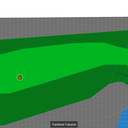
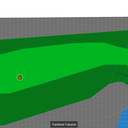

Zolf is a game about winning a round of golf during the zombie apocalypse. Like any golfing game, the objective is to hit the ball into the hole in as few strokes as possible. Unlike any golfing game, you gain negative points for killing zombies by hitting them with a fast-moving golf ball. You also gain infinite points for getting eaten by zombies (making you lose at golf).
Zolf was an entry for Ludum Dare 32, where the theme was "an unconventional weapon." As a "Jam" entry, it had a 72 hour time line, and was allowed to be a team project. It was developed by a team of four:
Images

 
